样片墙
以下均为顾客同意展示的样片 · 若看到熟悉的脸，纯属缘分
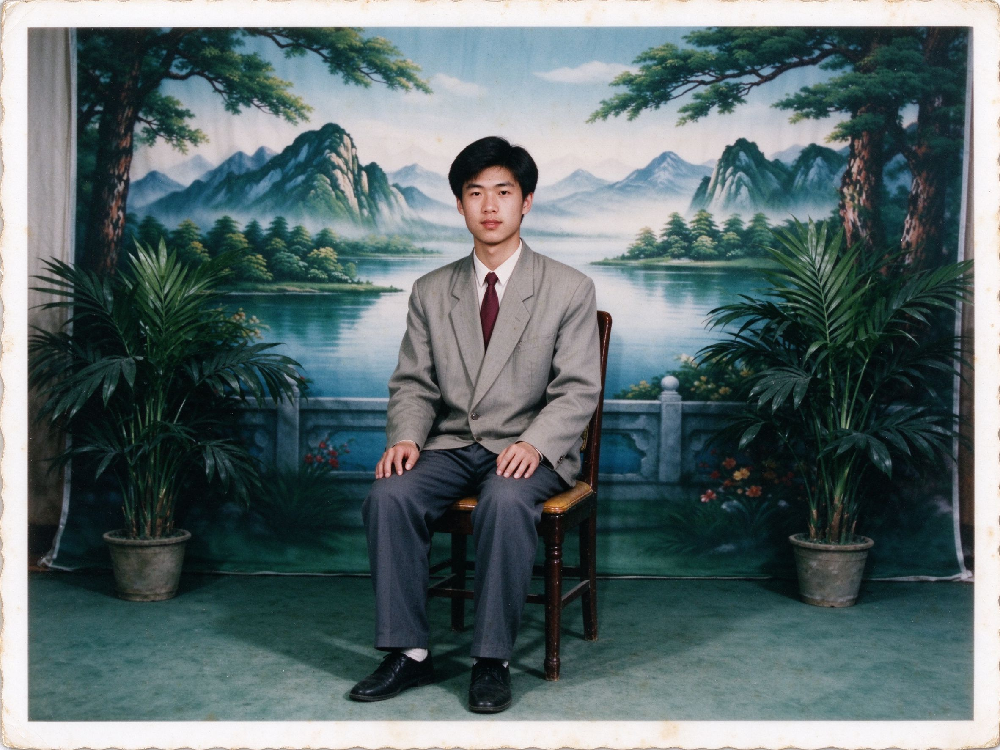
摄 影 棚
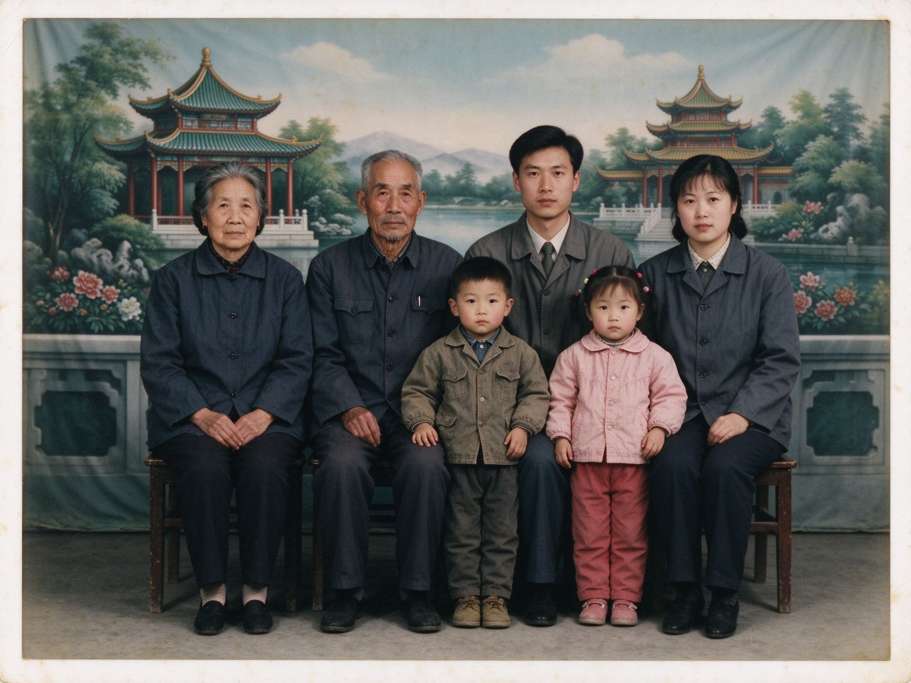
全 家 福

婚 纱 · 合 影
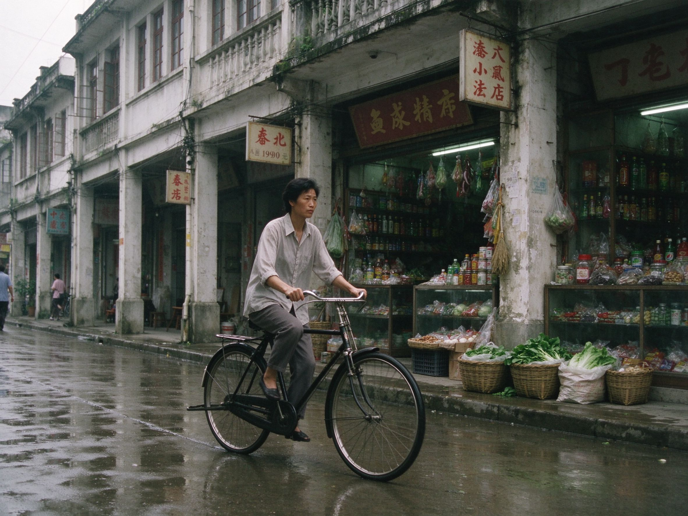
街 拍
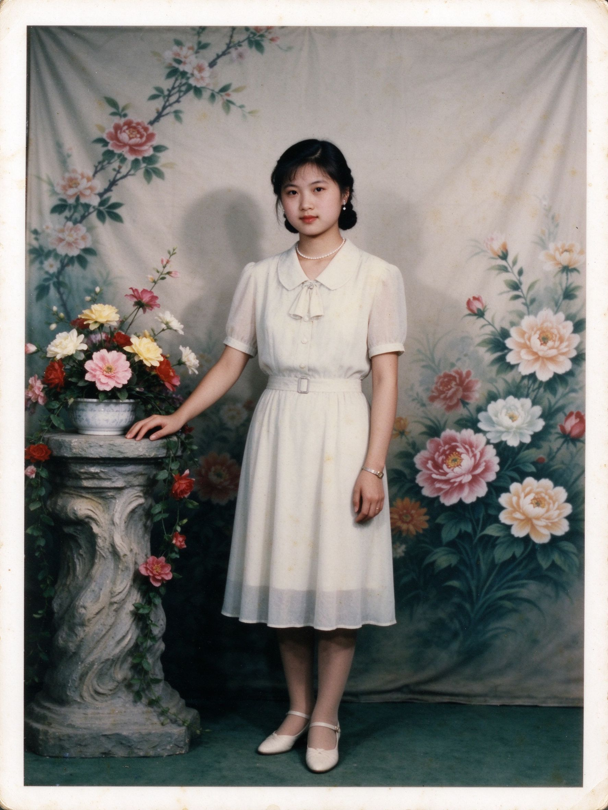
个 人 写 真
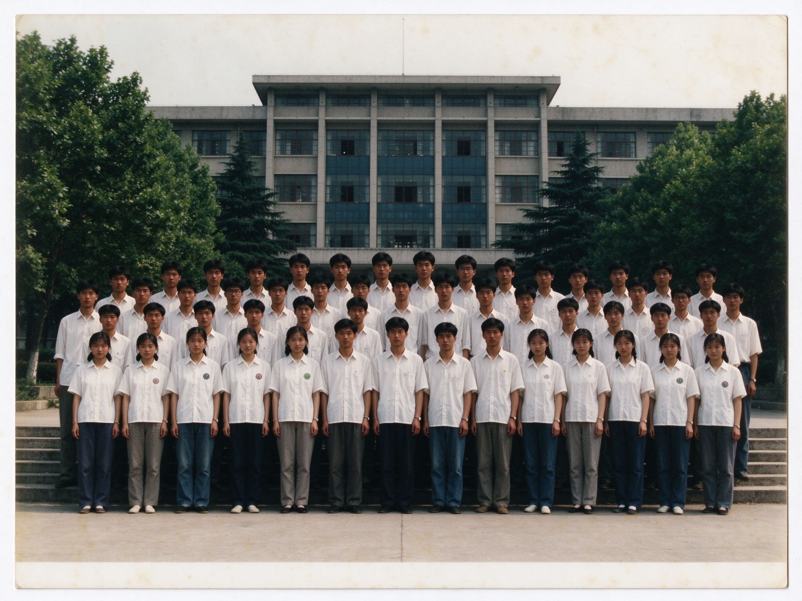
毕 业 合 影
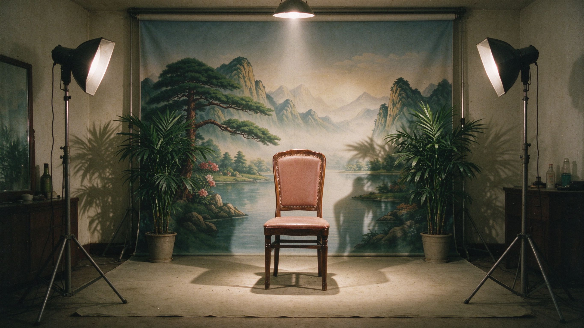
未使用的摄影棚
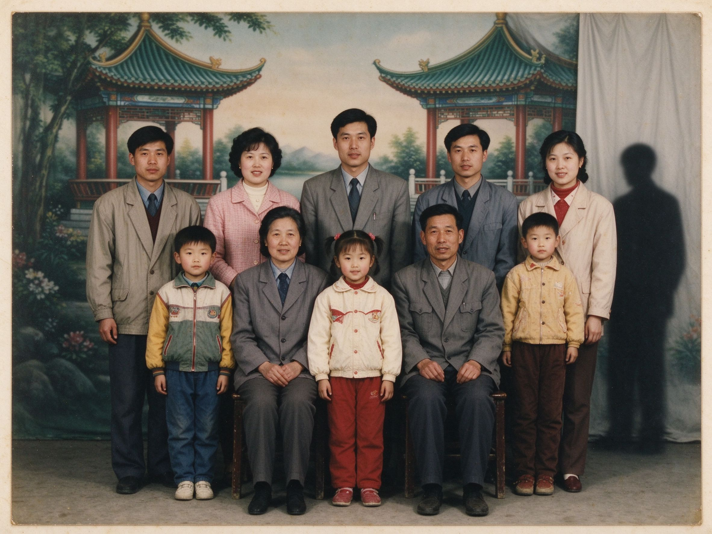
合 影（补拍）
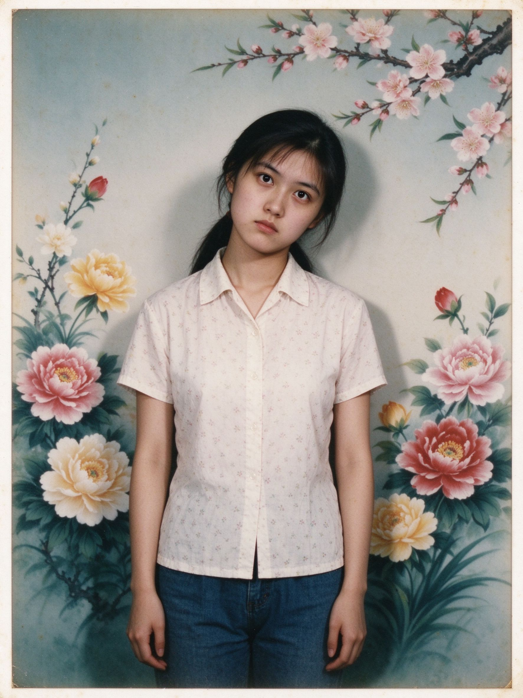
补 拍 的 写 真
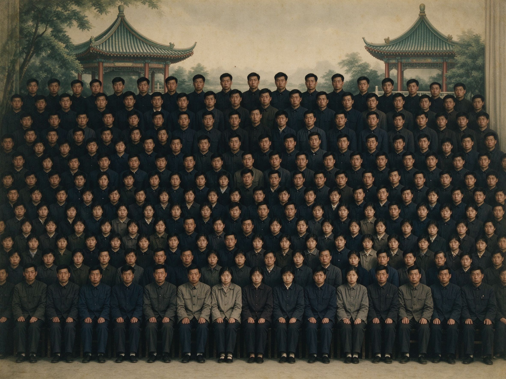
单 位 合 影
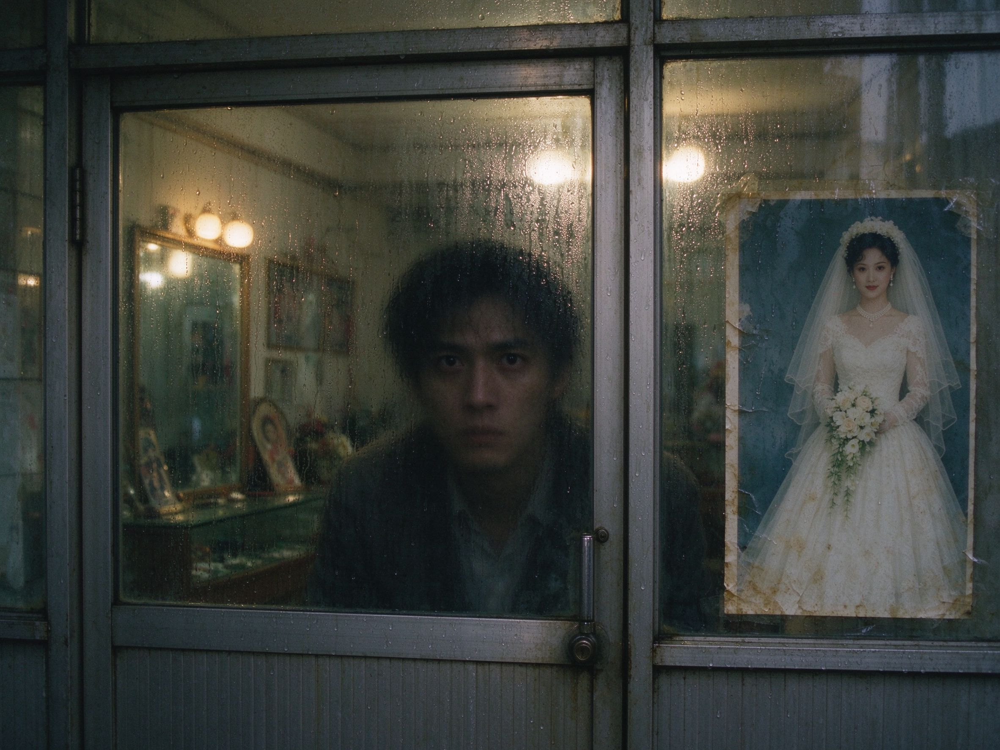
闭 店 前
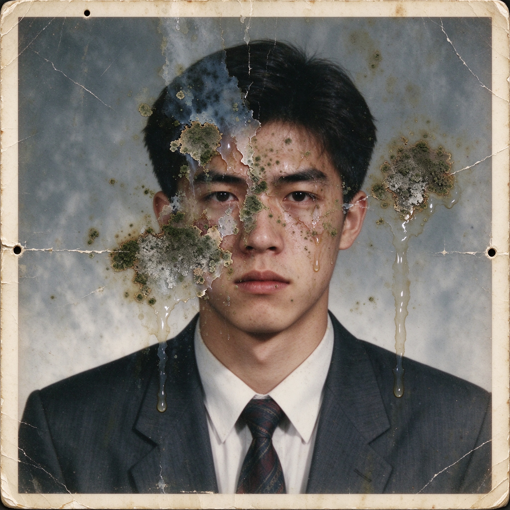
受 潮 的 照 片
底片损坏

损 坏 的 底 片
无 题
无 题
未编号
未 编 号 的 照 片
注：若您发现某张照片角落多了一个不该在的人，请不要声张，到留言板悄悄告诉我们。